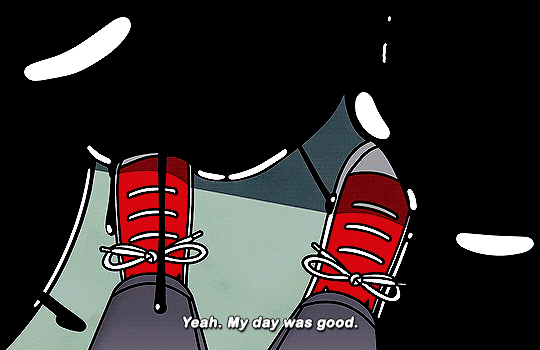
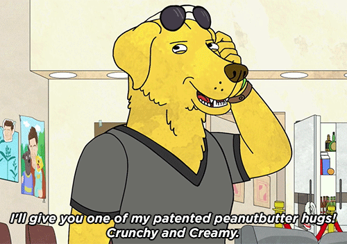

BoJack Horseman: Stop Horsin' Around!
For those who indulge in the popular TV series or strongly relate to its protagonist: BoJack Horseman, you might want to reconsider.
I investigate why in this data story.

I investigate why in this data story.
Why are viewers so obsessed with the show? Do the sentiments and themes portrayed by the show affect its viewership? According to this Medium article, BoJack Horseman has become an 'influential cult hit for Netflix'. However, 'underneath the fantasy lens of talking animals, zany antics, and sub-par animation, it is a show about a deeply depressed and lost individual trapped in Hollywood.'
Are viewers attracted to the show's underlying darkness and its deeply troubled main character, BoJack?
Curious, I conducted sentiment analysis on every line of dialogue from the show.
Here are some example lines of dialogue from the show, based on sentiment:


Sentiment analysis for the dialogue scraped from the entire series (Seasons 1 to 6) was conducted using VADER by Python. Check out the Google Colab here!
Total number of lines of dialogue based on character (all seasons)
'Other characters' are either secondary or side characters that each have lesser dialogue than any of the main characters.
Hence, we observe that the main protagonist, BoJack Horseman, accounts for majority of the dialogue throughout the series.
Average compound sentiment scores for each episode.
The compound score is the sum of positive, negative and neutral scores, normalised between -1 (most extreme negative) and +1 (most extreme positive).
Average compound sentiment score for episode = sum(compound sentiment score of line of dialogue)/total no. of lines of dialogue
After calculating averages, the compound scores are of a low positive value. With one exception: S3E4.
Why is that so? Click on its bar in the chart to find out more!

This episode is mainly silent, and features only 29 lines of dialogue.
Hence, the compound sentiment score is potentially skewed due to a sparse amount of data to work with.
For now we conclude that, based purely on the dialogue, the overall sentiment of this episode is negative.
Data for ratings were sourced from IMDB
There is a negative correlation between ratings per episode of the BoJack Horseman TV series and the average compound sentiment scores per episode.

Can you seek out datapoints that reveal a negative correlation between sentiment and rating? Interact with the chart to explore further!
Psst, here are some examples: S3E4, S3E11, S5E6
How negatively is BoJack portrayed to be, based on his dialogue in the show?
I compare the sentiment scores of BoJack's dialogue per episode, with that of another main character, Mr. Peanutbutter.
Mr. Peanutbutter is known to be the (chaotic) nice guy of the show, usually happy-go-lucky and unapologetically optimistic.
I have explored the sentiments portrayed in BoJack Horseman, and derived that its main character, BoJack, is typically portrayed expressing himself negatively through dialogue.
Indeed, this might be telling of the show's viewers' preferences and character. If you are one of the loyal fans of BoJack Horseman, or if you feel that BoJack's character resonates strongly with you, you might want to start thinking about what that means now, in light of this data story. Maybe it is time to start going for therapy, instead of using animated characters as an outlet to work through your issues...just kidding!
😊😐🥲
There are many caveats and things that need to be acknowledged with this data story.
Firstly, sentiment analysis conducted by AI is likely not fully accurate. The sentiment analysis that I carried out had neglected certain context, such as the visual content of the scene at the time of each line of dialogue being executed.
Secondly, sentiment analysis isn't the be-all and end-all of judging a show's portrayal of its themes and characters. One would likely find such categorisation of sentiments overly polar and insufficient in properly capturing the nuances of emotions portrayed on screen, especially when it comes to complex, multi-layered shows such as BoJack Horseman.
Some episodes of data had to be left out in my datasets, due to incomplete parts of the transcript data. Hence, this is still not quite the full picture.
Furthermore, correlation definitely does not equal to causation. I definitely do not suggest that viewers of the show/fans who relate to BoJack Horseman possess such preferences due to the show's negativity. There are many other aspects of the show to enjoy or relate to, and without proper survey or other methods, there is no way of determining whether the show's portrayed sentiments have any effect on its viewership/viewers' behaviour.
Nevertheless, if this data story has prompted you towards some reflection that has revealed personal findings that align with what I propose through this data story, I hope that you are feeling okay.
The show deals with many hard-hitting themes, such as existentialism, addiction, depression and more. This adult animated series might not be suitable for all, especially those in vulnerable mental states. If you do find yourself turning to such shows as an outlet, or if you feel upset after watching or learning about the show's contents, do know that help is always available if you need it.
In the meantime, here is a fitting quote from the Jogging Baboon from the show: